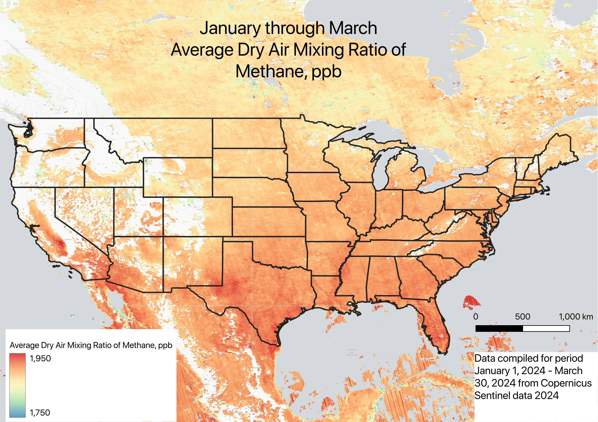

This project visualizes methane emissions across the U.S., identifying high-emission hotspots and comparing them with known high-methane producing sources.
Methane emissions in the U.S. stem from a wide variety of factors including, industrial activity, natural ecosystems, and urban waste.
The emissions concentrations appear in fossil fuel hubs like Texas and Louisiana, where there is a high volume of natural gas processing plants and oil and gas infrastructure.
Wetlands, particularly in Florida, the Gulf Coast, and the Mississippi River Basin, also contribute significantly through natural anaerobic processes.
Meanwhile, urban centers see elevated methane levels from landfill decomposition, making waste management a key factor.
These overlapping sources highlight the complexity of methane emissions, with fossil fuel and landfill emissions being the most actionable targets for reduction.

Methane Concentration
This map shows methane concentration levels as detected by Sentinel-5P satellite data.
Major high-emission zones can be observed in oil-producing states like Texas and Louisiana, as well as wetland regions in Florida and along the Mississippi River Basin.
These elevated levels suggest both natural and industrial contributions to methane emissions.
Processing Plants
This map overlays methane emissions with the locations of natural gas processing plants.
The concentration of methane is particularly high around major processing hubs in Texas, Louisiana, and the Midwest, highlighting a strong correlation between fossil fuel infrastructure and methane release.
Wetlands & Methane
Wetlands are a natural source of methane emissions due to anaerobic decomposition in waterlogged soils.
This map compares methane concentrations with major wetland areas, particularly in Florida, the Gulf Coast, and the Great Lakes region.
Landfills & Methane
Landfills generate methane through the decomposition of organic waste, making them a major source of emissions in urban areas.
This map highlights landfill sites across the U.S. in relation to methane concentrations.
Urban centers like California, the Northeast, and the Midwest show elevated methane levels near large landfills, reinforcing their role as localized but significant emission sources.